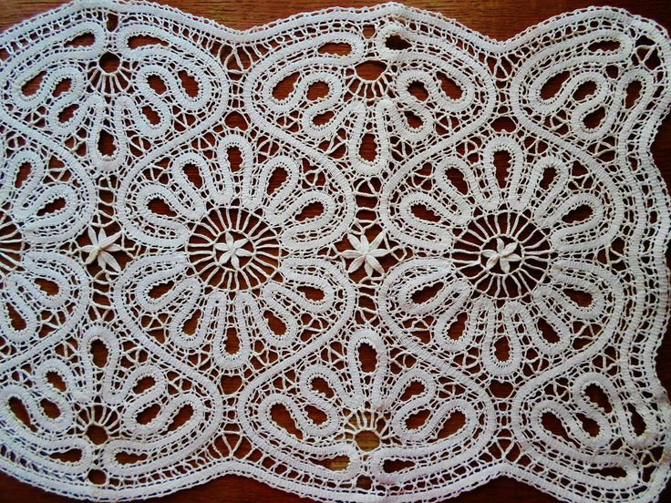
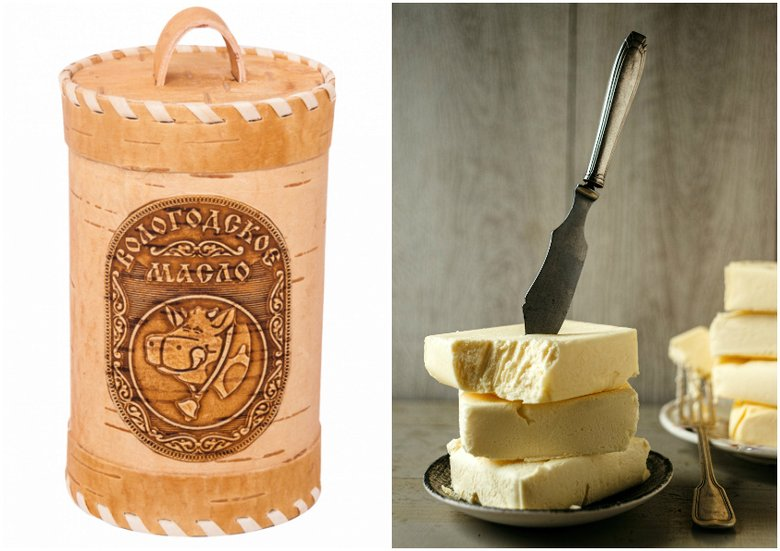
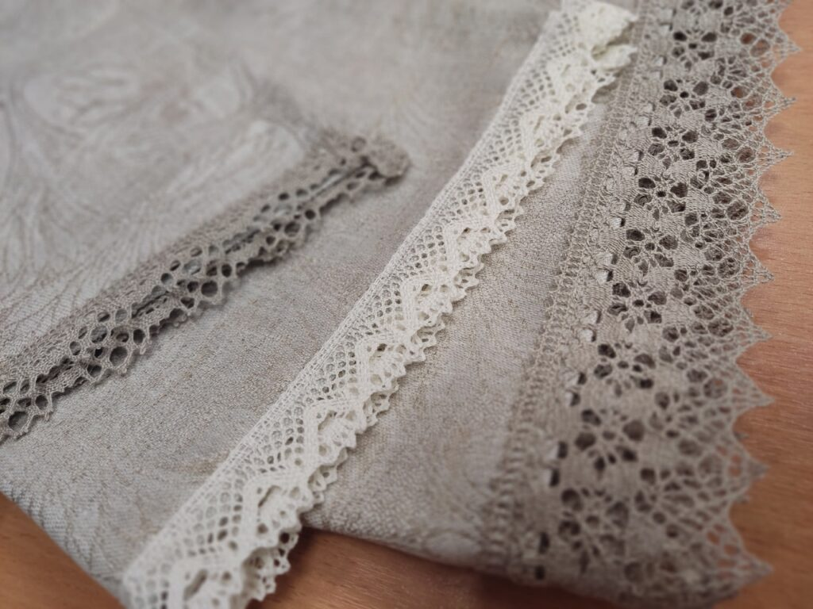
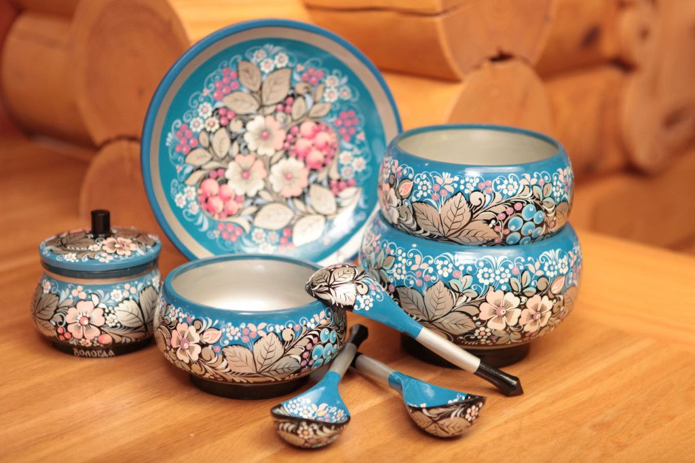
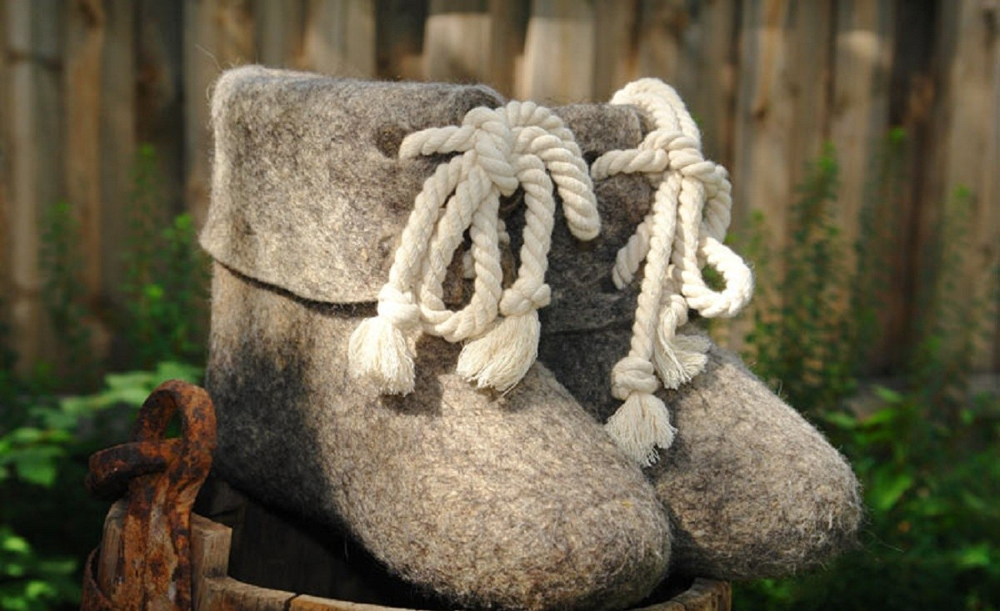

Вологодское кружево
Это самый известный художественный промысел Вологодчины. Его отличительная черта — четкий рисунок непрерывной полотняной тесьмы на фоне ажурных решеток. В отличие от других техник, оно плетется на большом количестве коклюшек.
В XVII–XVIII веках кружевом украшали одежду знати, а сегодня вологодские мастерицы создают огромные панно и современные наряды, признанные шедеврами мирового искусства.

Вологодское масло
Своим появлением этот продукт обязан Николаю Верещагину. Он разработал уникальный метод пастеризации сливок при температурах, близких к кипению, что придает маслу знаменитый «ореховый» привкус.
Настоящее вологодское масло производится только из молока, полученного в экологически чистых районах области, и является мировым эталоном качества.

Вологодский лён
Лён издревле называли «северным шёлком». Вологодская земля всегда славилась полным циклом обработки этого растения — от выращивания до тончайшей выделки полотна.
Вологодские льняные ткани отличаются высокой прочностью и долговечностью. Сегодня лён — это символ экологичного образа жизни и безупречного вкуса.

Вологодская роспись
На Вологодчине существовало более 20 видов самобытных росписей по дереву. Самые яркие из них — Шекснинская золотистая с её «огненными» цветами и Гаютинская, напоминающая мелкую мозаику из бисера.
Мастера украшали ими всё: от прялок и ковшей до крестьянских домов. Каждый узор имел глубокий смысл: символизировал солнце, плодородие земли или древо жизни, оберегая дом и принося в него радость.

Вологодские валенки
Валяный промысел — один из самых практичных и душевных на Севере. В условиях суровых зим валенки были незаменимы. Вологодское валяние отличается использованием только натуральной овечьей шерсти без химических добавок, что делает такую обувь целебной.
Сегодня в Вологде сохраняют старинную технологию ручного валяния, создавая как классические модели, так и современные дизайнерские валенки с изящной вышивкой.